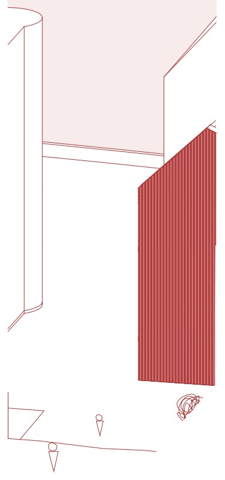
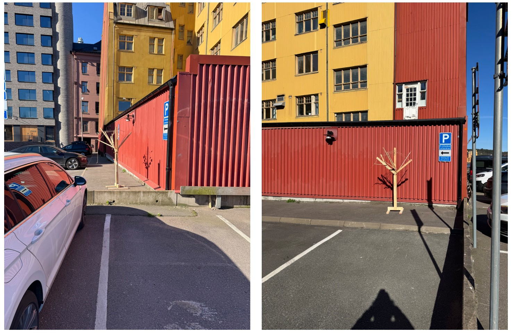

The market of time
An adaptive reuse study developed through four stages of transformation. Axonometric drawings and a section describe changes to the market building, its uses and its relationship to the surrounding public space.


The building begins defined by closure and silence. The red wall stands as a physical and symbolic barrier. Separating city from market, consumer from producer. Behind this sealed façade lies a hidden process, a complex exchange frozen out of sight. This stage reflects disconnection, a moment where potential remains unrealised.
Enlarge drawing ↗